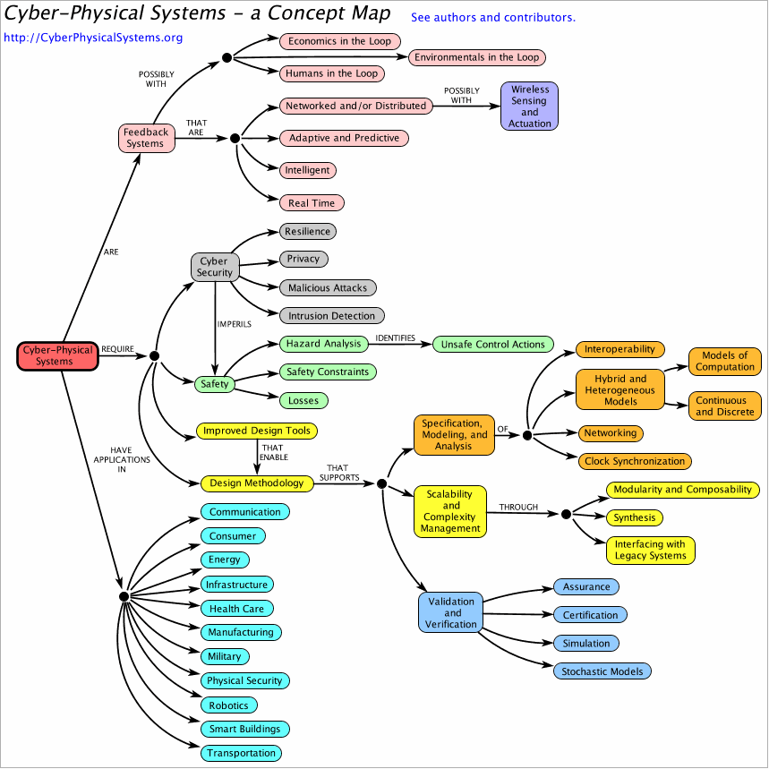

Cyber-Physical Systems (CPS) are integrations of computation, networking, and physical processes. Embedded computers and networks monitor and control the physical processes, with feedback loops where physical processes affect computations and vice versa. The economic and societal potential of such systems is vastly greater than what has been realized, and major investments are being made worldwide to develop the technology. The technology builds on the older (but still very young) discipline of embedded systems, computers and software embedded in devices whose principle mission is not computation, such as cars, toys, medical devices, and scientific instruments. CPS integrates the dynamics of the physical processes with those of the software and networking, providing abstractions and modeling, design, and analysis techniques for the integrated whole.

Click on icons above for details. Please send comments, suggestions, and links to eal@berkeley.edu. Alternatively, you can download the above model from http://CyberPhysicalSystems.org/CPSConceptMap.xml and edit it in Ptolemy II. See also the PDF version.
As a discipline, CPS is an engineering discipline, focused on technology, with a strong foundation in mathematical abstractions. The key technical challenge is to conjoin abstractions that have evolved over centuries for modeling physical processes (differential equations, stochastic processes, etc.) with abstractions that have evolved over decades in computer science (algorithms and programs, which provide a "procedural epistemology" [Abelson and Sussman]). The former abstractions focus on dynamics (evolution of system state over time), whereas the latter focus on processes of transforming data. Computer science, as rooted in the Turing-Church notion of computability, abstracts away core physical properties, particularly the passage of time, that are required to include the dynamics of the physical world in the domain of discourse.
At Berkeley, iCyPhy, the Industrial Cyber-Physical Systems consortium, is pursuing foundational research in the abstractions and analytical techniques of CPS. Some of the projects addressing this problem:
Some specific research products relevant to CPS: